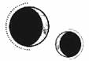

CAPÍTULO 9
Unos días después, la bandeja del almuerzo llegó acompañada de una nota.
«La transferencia será esta noche», decía la tarjeta, escrita con una letra desabrida.
Ferron entró en la habitación a las ocho. No pronunció palabra; se limitó a colocarse junto a la silla y esperó.
Helena pudo haberse resistido, pero sabía que era inútil. Se acercó con tal miedo que le dieron ganas de vomitar. El recuerdo de las fiebres y las pesadillas empezaba a hacer mella en ella.
En cuanto se sentó, Ferron se quitó los guantes y se colocó a su lado.
Helena miró fijamente al frente hasta que él le echó la cabeza hacia atrás.
Tuvo mucho más cuidado que la primera vez. Al parecer, haber sufrido convulsiones febriles le hacía tener cierta cautela.
La presión que ejercía su resonancia fue extendiéndose poco a poco. Helena sintió como si se sumergiese a gran profundidad bajo el agua y, cuando la presión amenazó con aplastarla, ya era demasiado tarde para escapar. La resonancia de Ferron redujo su consciencia a cenizas y dejó sus pensamientos fragmentados, doblegados. Su visión se tornó roja y un líquido caliente le brotó de las comisuras de sus ojos deslizándose por la sien.
Una terrible presión vibrante la oprimía por dentro y, al fin, Ferron se soldó a su consciencia como si se hubieran fusionado.
Para bien o para mal, esta vez estaba perfectamente consciente y sentía coherencia.
—Te odio —logró decir, y dejó que él sintiera lo mucho que lo detestaba. Si había algún momento en el que podía provocarlo, seguramente era ese. Mientras llevaba a cabo una operación tan peligrosa, no podía cometer ningún error, pero Helena estaba paralizada, era incapaz de moverse.
«Te odio. Traidor. Cobarde. Te odio».
Ferron no le prestó atención. Permanecía inquietamente inmóvil, como si estuviera ausente, distraído de ese extraño plano de existencia en el que se había obligado a entrar. Esta vez no hizo nada, ni siquiera le dirigió una mirada.
Tras unos instantes que se hicieron eternos, se desenredó. No salió del tirón, sino que se retiró poco a poco. Fue peor, porque tardó mucho más. Helena sintió como si la desgarraran por dentro.
La habitación se convirtió en un túnel, roja y en carne viva; su mente estaba descarnada.
Cayó hacia delante.
Una cara flotaba ante sus ojos, primero teñida de rojo y después blanca. Parpadeó y el rojo se emborronó. Sus ojos se negaban a enfocar. Sentía las manos y los pies entumecidos. Notaba rígida la parte derecha de la cara y del cuerpo.
El rostro que tenía delante era extrañamente pálido. Por un instante, vio un gesto de preocupación, aunque se tornó impasible cuando logró enfocar la vista.
Era un hombre.
—Estás bien. Has tenido una convulsión. Ya ha pasado.
Le tocó la mandíbula y sintió una calidez bajo la piel que, poco a poco, la relajaba, ahí donde los músculos estaban tan tensos que parecía a punto de resquebrajarse.
—¿Puedes hablar? —preguntó—. Llevas varios minutos gritando.
Helena intentó tragar saliva. Le dolía la cabeza, como si una membrana húmeda le palpitara dentro del cráneo. La boca le sabía a cobre.
Trató de hablar, pero tenía los músculos de la parte derecha de la mandíbula tan rígidos que apenas podía separar los dientes. Apretó la cara contra la calidez que emanaba la mano y quiso llorar.
Sentía un frío intenso, como si algo venenoso se estuviera extendiendo por su cuerpo, congelándola desde dentro. Un sonido grave y ahogado se escapó del fondo de su garganta.
No comprendía lo que pasaba. No recordaba…
—¿Quién eres? —logró articular entre dientes.
Una multitud de emociones cruzó el rostro del hombre. Abrió la boca para responder, pero luego la cerró.
—Estoy a cargo de tu cuidado —dijo finalmente muy despacio, pronunciando cada palabra con precisión. Bajó la mano hasta un lado del cuello, lo que la hizo estremecer. Las yemas de sus dedos tocaron la hendidura que tenía en la base del cráneo—. Duérmete. Lo recordarás cuando despiertes.
Helena quería respuestas, no dormir, pero la calidez que inundó su piel fue como agua tibia. La habitación se distorsionó, los bordes desaparecieron y la cara se fue desdibujando hasta que se convirtió en un borrón.
—¿Te conozco? —preguntó cuando se le cerraron los párpados.
—Supongo que sí.
Cuando volvió a despertar, sí que recordaba y estaba gritando. Tenía la cabeza ardiendo de fiebre y se sentía lúcida por momentos. A veces recordaba la transferencia y, en ocasiones, se encontraba perdida y desconcertada.
«Huye».
Tenía que huir, irse a alguna parte. Pero necesitaba… algo.
No podía irse sin eso.
En plena noche, deambuló hasta el jardín, bajo una lluvia gélida que caía del cielo, buscando. Se tumbó en el suelo, con la intención de que se enfriara el fuego que sentía arder dentro de su cabeza. Si lograba calmar la mente, recordaría qué estaba buscando.
—¿Qué estás haciendo? Te vas a morir de hipotermia, idiota. —Ferron la llevó de vuelta a la casa.
Tenía la piel tan fría que hasta las manos muertas de las criadas le parecieron cálidas cuando le quitaron la ropa mojada.
Cuando por fin la dejaron sola, intentó regresar al exterior, pero habían cerrado con llave la puerta y las ventanas. Al final, tuvieron que atarla a la cama para evitar que se desgarrara los dedos arañando la madera para intentar salir.
La dejaron allí, atada, obligándola a soportar pesadillas horribles, escabrosas y sangrientas, mientras la fiebre la consumía.
Cada vez que cerraba los ojos, se encontraba de nuevo en la Academia, tan brillante, dorada y resplandeciente como siempre la recordaba, y subía los escalones de la Torre para ir a clase, con los libros apretados contra el pecho. Luc la acompañaba, tranquilo, como siempre. Había alguien más con ellos, pero su rostro se le escapaba incluso en sueños.
Sin embargo, en cuanto Helena parpadeaba o agachaba la cabeza para tomar nota, todo se venía abajo. Los alumnos aparecían desplomados en sus sillas, abiertos en canal, y la sangre se deslizaba por la habitación. Helena era la única superviviente de la masacre.
En uno de los sueños, Penny yacía sobre una camilla, atada, gritando mientras unas figuras sin rostro le hacían una vivisección frente a un grupo de alumnos muertos.
En otro, Ferron subía a la palestra, como si lo hubieran llamado para hacer alguna demostración. Permanecía allí inmóvil mientras se transformaba lentamente del chico de cabello oscuro a una pesadilla pálida y plateada. El color drenado se convertía en sangre que le goteaba de las manos.
Cuando por fin la abandonó la fiebre, las extremidades se le habían vuelto a atrofiar. No tenía ni idea de cuánto tiempo había pasado. Cada vez que caminaba se tambaleaba y tropezaba como un gatito recién nacido. Era como si las sinapsis cerebrales estuvieran mal conectadas.
Agradeció que Ferron no acudiera para obligarla a salir. No quería volver a verlo, porque tenía un recuerdo claro como el agua en el que él le apretaba la cara con su mano y ella no tenía ni idea de quién era.
¿A cargo de su cuidado? Era una forma muy generosa de describirse a sí mismo.
Helena se detuvo, rememorando la escena, lo lento que había pronunciado las palabras cuando respondió a su pregunta. Helena había hablado en etrasiano.
Mientras se recuperaba, soñó mucho con Luc. Eran recuerdos. No los que había olvidado, sino momentos del pasado que le dolían con solo evocarlos.
—Vamos —susurró Luc cuando la encontró estudiando en la biblioteca—. Llevas aquí dos días. Te van a empezar a salir setas en las orejas. —Le tiró de una para provocarla—. Necesitas que te dé el sol. Y yo también.
—Tengo que terminar de analizar esta estructura de sellos —dijo protestando, e intentó darle un codazo para que se fuera, pero él se puso a quitarle los bolígrafos—. Vete.
Luc nunca se marchaba, por mucho que lo amenazara. Prefería hacer pucheros y se enfurruñaba, cada vez más ruidoso, hasta que los bibliotecarios le pedían a Helena que lo sacara de allí, como si el futuro principado fuese una mascota que se negara a cooperar.
Cuando crecieron y Helena empezó a trabajar en el laboratorio, hacer ruido ya no bastaba para molestarla, así que Luc cambió de táctica: amenazaba con irse a buscar problemas, ¿y no le había prometido Helena a su padre que lo mantendría alejado de los problemas?
Iban a la ciudad y Luc le enseñaba los mejores sitios: las capillas de fuego más hermosas y las enormes catedrales periheliales, los jardines acuáticos escondidos, las librerías y las cafeterías más recónditas.
Todas las torres, todos los jardines y todas las vistas de Paladia que tanto había amado los había conocido porque Luc se los había enseñado. Había amado la ciudad a través de sus ojos. Ojalá hubiera cedido más a menudo.
Cuando Helena consiguió volver a salir de su habitación, la mente empezó a jugarle malas pasadas. De algún modo, la casa no parecía estar bien, era distinta a como la recordaba. La luz provenía de ángulos diferentes, las ventanas estaban donde no debían y había puertas que antes no existían.
—Esta vez hay menos inflamación cerebral —dijo Stroud cuando vino a examinarla. Su resonancia se movía como un gusano por el cerebro de Helena—. No me gusta que hayas sufrido otra convulsión, pero que solo haya sido una es una mejora. Creo que una transferencia al mes será lo correcto.
Stroud acababa de irse cuando Ferron llegó y se plantó a los pies de la cama, con las manos entrelazadas por detrás de la espalda, examinándola con sus ojos lánguidos.
—¿Sabías que dentro de poco es el solsticio? —dijo finalmente.
No. No tenía ni idea de qué día era. Sabía que pasaba un mes entre las sesiones de transferencia, pero tampoco estaba segura de cuándo había llegado.
El solsticio de invierno marcaba el fin del año en el Norte. Era uno de los eventos más importantes de su calendario. En los países de la costa sureña, donde los días no menguaban y se alargaban de forma tan drástica, el año seguía las mareas lunares de Lumitia.
—En teoría, ya no deberías estar aquí. —Ferron posó la vista en la ventana—. Parece que vas a pasar el invierno conmigo.
No había emoción en su voz ni en su semblante cuando lo dijo. Era una de las facetas que a Helena le resultaban más desconcertantes de él: lo poco que comunicaba con el cuerpo y el tono de voz.
Etras tenía una cultura y un idioma efusivos; sus habitantes usaban expresiones hechas y gesticulaban con las manos. Esto fue algo que distinguía a Helena como extranjera. Tuvo que aprender a entrelazar los dedos bajo la mesa cuando hablaba en clase, porque si no se arriesgaba a que todos estallaran en carcajadas si comenzaba a gesticular con las manos.
Los paladinos valoraban el silencio. Los alquimistas expertos solo movían los dedos para usar la resonancia de forma precisa y controlada. Era algo cultural. Se valoraban más las expresiones sutiles; los insultos solían tener forma de cumplidos sarcásticos, difíciles de interpretar para una recién llegada.
Helena tuvo que aprender a estarse quieta y observar las sutilezas. Comprender que, cuando las pupilas se estrechaban, los ojos la recorrían de arriba abajo y los pies apuntaban en direcciones opuestas, las sonrisas y las palabras bien intencionadas no significaban que cayera bien o que su presencia les agradara.
Ferron era más difícil de leer que la mayoría de los paladinos, no porque su cuerpo contradijera sus palabras, sino porque a veces su cuerpo no decía nada en absoluto. Se quedaba inmóvil, con expresión vacía y las manos escondidas. Helena no lograba discernir sus estados de ánimo.
—Está previsto que mañana lleguen algunas cosas que me ahorrarán seguir sufriendo más molestias por todo esto. Por favor —remarcó con especial énfasis la palabra—, no lo confundas con una muestra de afecto.
A la mañana siguiente, dejaron un paquete de cartón en la puerta, junto a la bandeja del desayuno. Dentro había un par de botas.
Helena las sacó y pasó los dedos por encima de los detalles.
Eran de un cuero precioso y pulido, con suelas robustas y una hilera de botones para abrocharlas. Se notaba que estaban hechas a mano.
Cuando Ferron soltó aquello de que le ahorrarían sufrir más molestias, Helena no imaginó que se tratase de unos zapatos, aunque las zapatillas que usaba estaban deshechas de caminar sobre la gravilla mojada.
Se puso las botas. Ya tenía ganas de pasear por los pasillos sin sentir en los pies el frío gélido del hierro.
Fue entonces cuando descubrió que había más objetos en el paquete: un par de guantes de lana tejidos de un tamaño extraño; eran muy largos en la parte de la muñeca. No llegaban a tener la longitud de los guantes elegantes, pero sí eran un poco desproporcionados, como si fueran guantes de cetrería.
Sacó uno con curiosidad y notó que la forma y la longitud estaban pensadas para cubrir los grilletes, evitando así que el metal se congelara y le provocara quemaduras en la piel.
Cuando llegó el momento de caminar, fue la primera vez que las manos y los pies no le empezaron a doler nada más salir.
Aun así, se negó a sentir gratitud hacia Ferron. Después del solsticio, el frío sería más intenso todavía. Si iba a pasar allí todo el invierno, lo más probable es que acabara con algún daño en los nervios o congelada por salir al jardín. Le convenía que Helena se mantuviera en buen estado.
Y ella no era tan idiota como para confundir la precaución con la amabilidad.